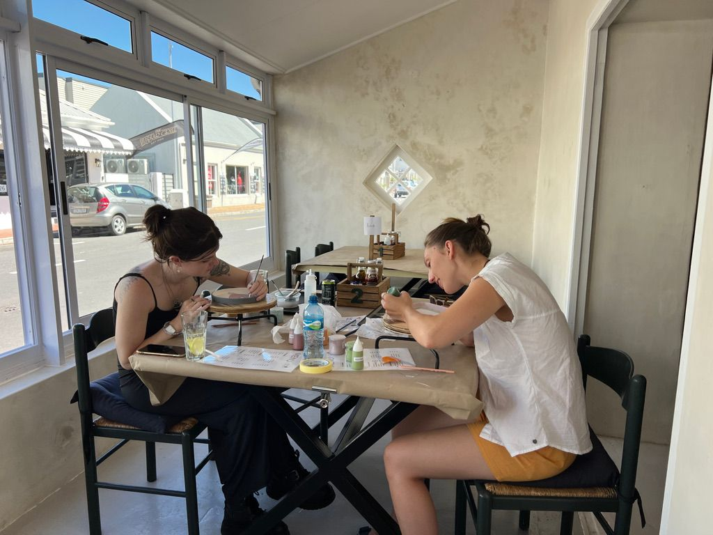
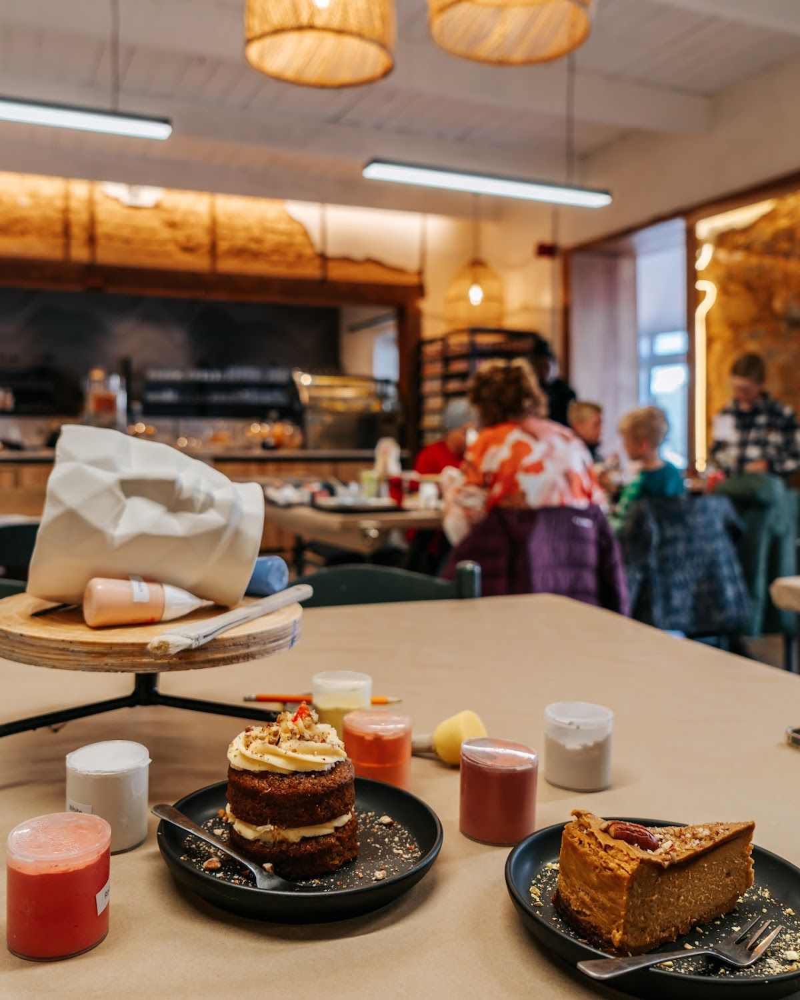
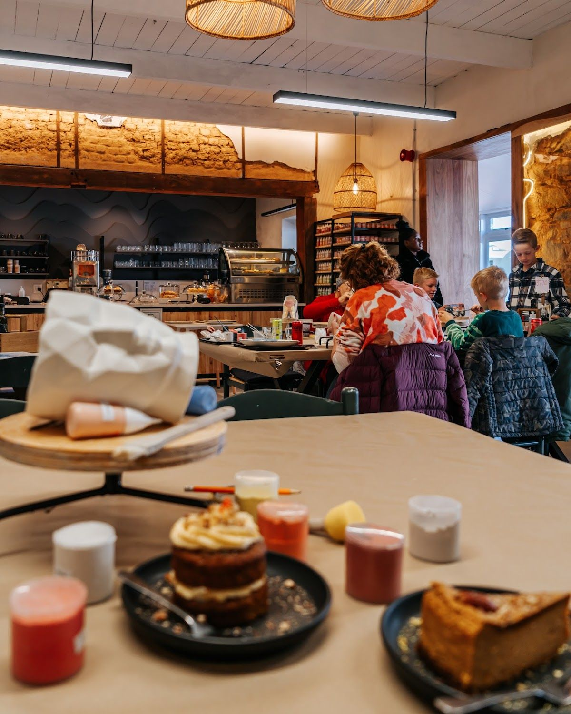
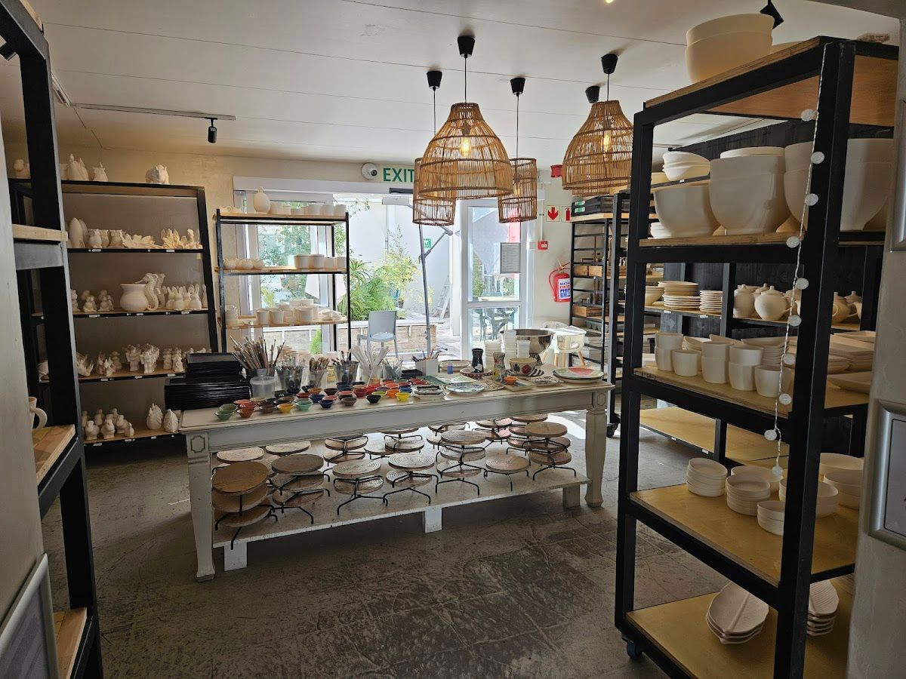

Experience a relaxing atmosphere with delicious food and an elegant setting in Hermanus.
Get In TouchBisque It is a vibrant cafe located in the heart of Hermanus, offering a delightful blend of delicious food and a relaxing atmosphere. Our elegant setting is perfect for unwinding and enjoying quality time with friends and family.
Our journey began with a passion for creating a community space where people could enjoy high-quality meals in a tranquil environment. We pride ourselves on our commitment to using fresh, local ingredients to craft dishes that are both flavorful and visually appealing.
At Bisque It, we value every customer's experience and strive to ensure that each visit is memorable. Our team is dedicated to providing exceptional service and creating a welcoming environment for all.
Discover our range of offerings designed to enhance your cafe experience at Bisque It.
Enjoy our carefully crafted menu, featuring a variety of dishes made from fresh, local ingredients. Perfect for any meal of the day.
Unwind in our cozy setting, designed to provide a peaceful escape from the hustle and bustle of everyday life.
Join our pottery painting sessions for a fun, creative experience. Perfect for individuals, families, and groups looking to explore their artistic side.
Here is what our clients say about us.
"Mom and daughter activity /Family activity / grandma with grand children activity / kitchentea idea. We spent 2 hours there and it flew by. We only enjoyed refreshments, didn't eat anything. Customers choose from a wide variety of already made 'blank' pottery. (Quite a big variety of kids items as well). You choose your colours, take all the stationery you need from a central table, including brushes. You have a seat and let the creativity flow. Enjoyable 80s music in the background. Very busy, so make a booking in advance!"— Marene Hoon, ⭐⭐⭐⭐⭐
"Had a great time with my 2 daughters... We spent 3 hours and it was the best thing to do. Prices are very reasonable and I will definitely do it again! 😀"— Saartjie Langenhoven, ⭐⭐⭐⭐⭐
"My first experience at Bisque It I found that the atmosphere was great and that it was a great place for family and friends to get together and have fun. After a few more times going there and slowly getting worse and worse service, I thought it was about time for a review. My first time ever visiting them, all the workers were nice and expelled all the stuff well, but when I reserved my ceramic back I found that there were little back spots on my piece. I brushed it off, thinking I may of done it by accident, but after reading one review I think that may of not been the situation. It seems that their service quality has declined. After recently visiting with a friend and some family members, we received our ceramics back. Looking over one we noticed that the one piece did not appear to look like how it was painted before the firing. Looking at old photos of it before firing, it must have been that they had broken the original ceramic art piece and had then attempted to recreate it and made it appear that nothing happened and it was the true original ceramic done by one of us. The recreation of the piece was sloppy and looked like a first grader painted it in 5 minutes. The fact they think that they can try to pull this off, I find very strange and unprofessional. Lastly taking a closer look at my friend's ceramic, it appeared that there were small bubbles in the glaze that gave it a very rough feeling to it and as well made the art on it look fuzzy and off. I personally would not want to drink out of it, as it would trigger my sensory issues. I did not make this review as a hate comment on the business but as a warning of what may happen if you go to Bisque It. Over time that I have visited, I have gotten great service and my ceramics coming out looking great. If only my English essays looked like this..."— Kaitlyn Nothnagel, ⭐⭐
"My family was very impressed with the dining experience and pottery painting! Treat yourself and your family with a great relaxing experience. Great food. Nice vibe."— Pieter db9, ⭐⭐⭐⭐⭐
"Nice day out with the family for my mom's birthday. But disappointed when we waited almost 5 weeks and got some blooper products back. Bisque said we spilled paint but I think I would’ve noticed if a big blob of paint was spilled on my product while we were painting. So would recommend checking products before you leave them there (maybe take pictures)."— Nelani Botma, ⭐⭐




We'd love to hear from you — reach out to us anytime.